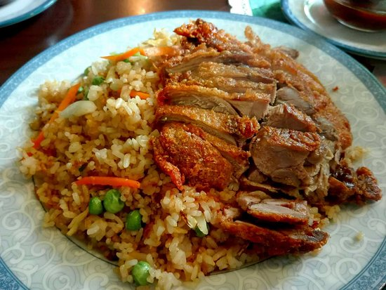

Recipe: Crispy roasted duck with rice

Description
Crispy duck is a delicate roasted speciality. With fine preparation served with delicious rice, sweet chili-sauce and vegetables.
Ingredients for 1 portion
- The breast of duck
- 250g rice
- Chili
- Tomato sauce
- 1 onion
- Broccoli
Preparation
- Warm your oven up on 160°C with curcilating air
- Cut the breast of the duck in evenly wide pieces
- Shove the duck into the oven and let it bake for 30 minutes until it looks crispy brown
- Wash your rice thouroughly several times
- Boil 2,5l of water, add salt and your rice and reduce the heat on a low level
- Let your rice boil for around 20 minutes
- Meanwhile prepare your sauce, cut your onions and the chili after that add them into the tomato sauce and stir everything up
- Turn off the stove and let your rice soak in all the water for ten more minutes
- Start steaming your broccoli for 10 minutes (this way the broccoli will be more nutritious)
- Before everything is finished start warming up your sauce in your pan
- Serve your duck with broccoli and your sauce with a fine vine of your choice
Wanna go back and check out other recipes? Click
here.